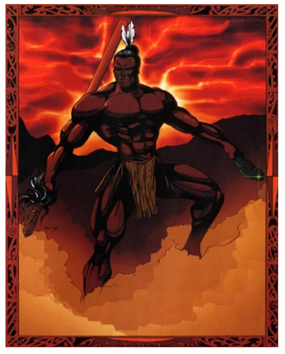
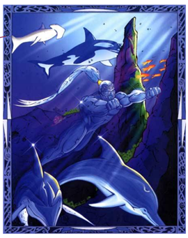
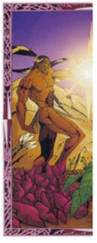
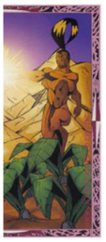
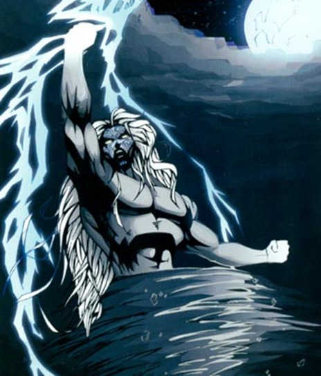

TĀNEMĀHUTA – THE GOD OF THE FOREST

Tāne Māhuta, the God of the Forest, is also the father and God of all who dwell in the forests (insects, animals, and especially the birds). It was Tāne Māhuta who had the strength to separate his parents by laying flat on his back and pushing up with his legs.
RŪAUMOKO – THE GOD OF EARTHQUAKES, VOLCANOES & SEASONS

Rūaumoko is the god of earthquakes, volcanoes and seasons He is the youngest son of Ranginui and Papatūānuku. After Rangi and Papa were separated by their sons, Rangi cried, and his tears flooded the land. To stop this, the sons decided to turn Papa face down, so Rangi and Papa could no longer see each other's sorrow. Rūaumoko was at his mother's breast when this happened, so he was carried into the world below. He was given fire for warmth by Tama-kaka, and his movements below the earth cause earthquakes and volcanoes.
TŪMĀTAUENGA – THE GOD OF WAR & PEOPLE
Tūmatauenga, or Tū, is our God of War, and also the God of People. After the separation of their parents, Tāwhirimātea waged war on his brothers. He subdued a number of them, but Tūmatauenga proved his equal. From that time on there has been an ongoing battle between the weather (Tāwhirimātea) and people (Tūmatauenga).
TANGAROA – THE GOD OF THE SEA & OCEAN
Tangaroa is the God of the Sea and all those who live in the ocea. Māori believe that water is an energy, with many moods. It can be calm and life-giving, or dangerous and destructive. This energy is called Tangaroa. One tikanga speaks of never turning your back on Tangaroa when by the seaside, as this is disrespectful of his mana.
RONGOMATĀNE – THE GOD OF KUMARA & CULTIVATED FOOD
Rongomatāne is the God of Cultivtated food, and the kumara. When Tāwhirimātea was venting his anger on his brothers, both Rongo and Haumiatiketike, took refuge in the body of Papa, mother earth, who hid them until the storm passed. In the Māori language, ‘rongo’ means peace. Rongo is generally portrayed as the creator of the kūmara, a plant associated with peace.
HAUMIATIKETIKE – THE GOD OF UNCULTIVATED FOOD
Haumiatiketike is our God of Uncultivated food. Haumia agreed to the forced separation of his parents. Because of this he was subjected to the fury of his brother Tāwhirimātea, who would have killed him if their mother had not hidden him in her body, that is, in the ground. While he escaped from Tāwhirimātea, he was later discovered by Tū, god of war (here representing humankind), who saw Haumia's hair sticking up out of the earth. Haumia contrasts with his brother Rongo, the god of the kūmara and all cultivated plants.
TAWHIRIMĀTEA – THE GOD OF WIND & WEATHER
Tāwhirimatea is the God of Wind and the Weather. Tāwhirimatea was against the separation of his parents, and to this day stays close to his father.
New Zealand’s rapid weather changes, frequent rain, distinctive cloud patterns and strong winds all had a huge influence on the daily life of Māori. Each region developed a rich store of words, sayings and traditions relating to the domain of Tāwhirimātea – god of the weather. Story by Basil Keane Main image: Tāwhirimātea, god of the weather The weather was very important in Māori life. The seasons, the wind and the rain affected daily activities, especially growing crops and fishing. There are dozens of words to describe the weather. There are also stories to explain wind, thunder, rainbows and other natural events. Tāwhirimātea’s battle In Māori tradition, Tāwhirimātea is the god of the weather. His parents were Ranginui (the sky father) and Papatūānuku (the earth mother), who lay close together. To let light into the world, Tāwhirimātea’s brothers separated their parents. But Tāwhirimātea did not agree to this. To show his anger he sent out his children, the four winds, and clouds that brought rain and thunderstorms. This destroyed trees in the forests ruled by his brother Tāne. But Tāwhirimātea could not defeat his brother Tūmatauenga, god of the people. The battle between people and the weather continues today. The seasons
· Spring is the time for digging the soil, ready for planting. The word for spring, kōanga, includes the word kō – a digging stick. Spring begins in September in the southern hemisphere.
· In summer (raumati) a bright star, called Antares or Rehua, appears. The cicadas that sing in warm weather are called Rehua’s birds.
· Autumn (ngahuru) is often a good time, because food is harvested. The name ngahuru means ten: February-March is the tenth month in the Māori calendar.
· In winter a star called Sirius rises. Māori call it Takurua, which also means winter.
Clouds (kapua) Different cloud patterns are named after familiar things, such as a belt, or rows of soil. People predict the weather from certain clouds. Clouds that bring rain and wind are called ‘atiru’. Rain (ua) It often rains in New Zealand, so there are dozens of words to describe rain. Raindrops are linked with the sadness of death, because they fall like tears. Wind (hau) Tribes have their own names for local winds. In Taranaki, ‘pieke’ is the east wind with rain. Tohunga (priests) used prayers to change the winds, for instance so that people could go fishing. Thunder and lightning Whaitiri is the goddess of thunder, which also has other names. Tama-te-uira is the god of lightning. A lightning strike on a tribal mountain is a sign of death, perhaps the passing of an important chief. Information has been copied from https://teara.govt.nz/en/artwork/8257/tumatauenga